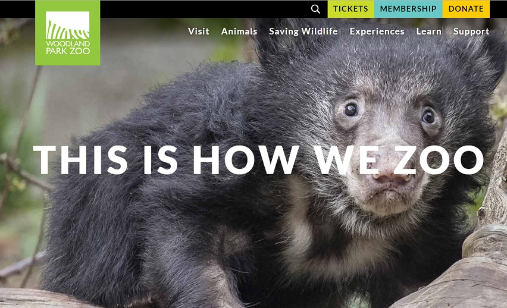

Intro
For this week’s Usability Test, I decided to have participants test out a specific feature on Woodland Park Zoo's website. Specifically, I wanted to test how effective this website is in allowing users to make the best, informed choices when signing up and purchasing membership plans. When I first read through the membership plans, I noticed that the way in which the content was presented, someone could be misled into purchasing a membership that isn’t the most cost beneficial.
Method and Tasks
The method in which I invoked in testing this was to guide and document three individuals ‘experience in going through the process of choosing and signing up for memberships. I broke this up into three different tasks:
- Navigate to the membership page
- Choose and sign up for the best membership that fits your current situation.
- Choose the best membership that would fit this scenario: 2 parents, 1 child, and 1 non-related adult such as a nanny or babysitter.
The first two tasks are very straight-forward while the final task requires a little more thinking behind the decision process. I wanted to highlight two different scenarios when signing up for a membership; one in which the membership option is simple and the other, where the option is not quite that clear-cut. In order to give all participants the same experience, I folowed this script.
Background Info
My participants agreed to meet me at a coffee shop near downtown Seattle. I chose a smaller, quieter shop in order to emulate the same experience someone would have at home as opposed to a busier, noisier surrounding. I had three participants in total ranging from the ages 22 – 29. In total there were two males and one female that participated in this test. One identified as a student (important later) while the other two worked in the tech industry in some capacity. All identified as avid web users with a slight lean towards mobile web.
First Task: Let's Navigate
In the first task, all participants were able to easily navigate to the membership page which is not a surprise because each participant were given two minutes to browse the home page. I was timing how long it took for a task to be completed but each participant was able to navigate through one click at the top of the page. While I gave each participant a two-minute break in between each task, I told them that they could read or explore the page so long as they stayed within the membership page.  Membership page can easily be accesible through the navigation items at the top. Average time to complete: < 1 second.
Second Task: Sign Me Up!
The results of the second task were like the first. Each participant was asked to select a membership that would best apply to them. All three chose the annual pass for one adult. In order to help simulate the process of purchasing a membership, I gave them information that they could enter on the required fields and proceed to check out, only stopping them at the payment screen. Having told them to think out loud and verbalize their thoughts, it was a mostly quiet for the first two tasks. When I reminded one participant that they can think out loud, they responded with “I don’t have to think for this.” The average time to complete this task was roughly 33 seconds.
Simple sign up page. Average time to complete: 33 seconds.Third Task: Hmmmm...
The third task presented to my participants brought some mixed results. I instructed them to find the best membership plan that would apply to a family of two adults, one child, and one adult who is not related to the family but acts as a caretaker to the child in some form or another. Two of my participants, B and C, selected the same base annual plan and added the required number of adults and children to the plan. The price for that plan came out to $206.00. I noticed that both participants didn’t even bother looking at other member options or even think out loud to themselves. These two averaged 28 seconds- an improvement from the previous task in terms of speed. The other participant, A, selected the family passport option, which is a plan for two adults, one child, and one flexible guest (adult) for the price of $195.00. This participant took 1 minute and 10 seconds to come to this decision and actually read out loud the different membership options and did the math out loud to calculate how much it would cost.
All the membership options available. Average time to complete: 42 seconds.Interpreting Results
While all three completed each task, Participant A made all the “correct” decisions. Participants B and C, while completing the final task in half the time as Participant A, did not realize that they could have saved money by choosing a different membership option thus both failing to choose the best membership for that specific scenario.
The Family Passport was the "correct" decision in task 3.I think there a few factors that I believe are involved in the decision-making thought process. First, when you get to the membership page, the “Annual Pass” option is expanded and takes up most the page. When I followed up Participants B and C about why they didn’t explore other options, B told me that they had no idea there were any other options and that the build your own membership seemed like the only option. C told me that they thought that the other options were premade membership options that you could easily make through the annual pass and it wasn’t clear as there were no instructions or indication one would save you more over the other. Participant A, on the other hand, took the time to click through all the options but found it “weird” that they had to do the math when it should have been clearly laid out in front of them which option is the best. In fact, Participant A, who just happens to be a student, didn’t realize that at the bottom of the page, there is student discount for those who sign up in person. When brought to their attention after the fact, A told me “I was focused on trying to do the math to make my decision, I didn’t really think about anything else [on the page].”
Missed student discount.Conclusion
My opinion on this website feature, is simple, it needs more testing with different demographics. It would be helpful to bring in people who have families of different sizes to see what their behavior is when selecting a membership option. As it stands, there is potential for people to sign up for a membership that cost them more than another type. One thing that Participant A brought to my attention is that some memberships have different benefits than others which might impact people’s decision making. As Woodland Park Zoo attracts diverse demographics, it could do well with more usability testing across a wide range of demographics of users.